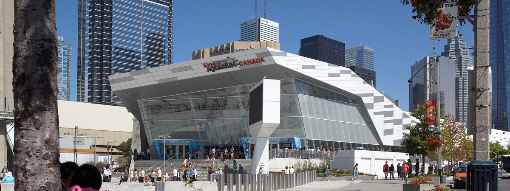

About Us
Conserve, Educate, Inspire!
At Ripley’s Aquarium of Canada, our mission is to provide a world class experience that will foster education, conservation, and research, while providing fun and entertainment for locals and tourists of all ages. By showcasing the beauty and significance of our aquatic world and the animals within it, we will both entertain and inspire while encouraging you to respect and protect the waters of the world.
Immerse yourself in a world of 20,000 aquatic animals and discover your own underwater adventure. The Aquarium features North America’s longest underwater viewing tunnel with more than 5.7 million litres of water and over 100 interactive opportunities. Get up close and personal with several touch exhibits featuring horseshoe crabs, sharks, scarlet cleaner shrimp, and stingrays as well as daily dive shows every 2 hours. This awe-inspiring attraction consists of nine carefully curated galleries showcasing a cross section of saltwater and freshwater environments from around the world – starting with species from Toronto’s backyard, the Great Lakes basin.
Experience the Aquarium after hours with our Sleep with the Sharks program, or spend your birthday party under the sea with our Birthday Theme Packages. Keep an eye out for special events such as our Friday Night Jazz or host your own event with a venue buyout or reception, and be amazed at the unique sea life that inhabits our aquatic world.
Ripley’s Aquarium of Canada is conveniently located in the heart of downtown Toronto, next to the CN Tower and Rogers Centre. Our address is 288 Bremner Boulevard. For more directions, please visit our Parking and Directions page.
Please note that you may take photos/videos as long as it is not for commercial use.